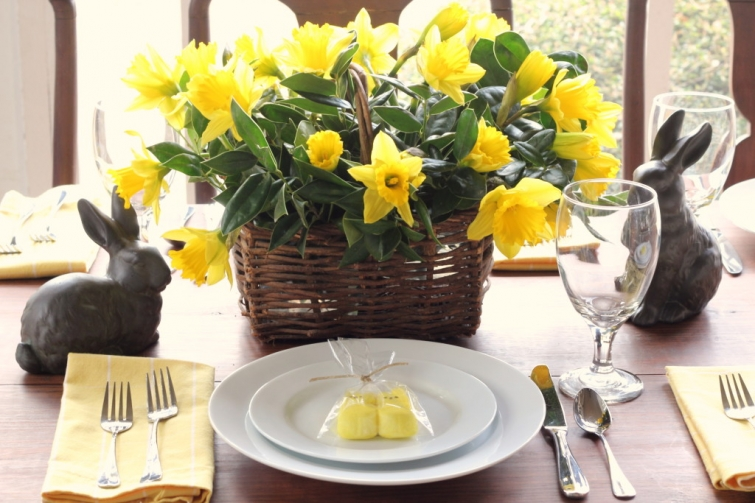

.png)
.PNG)
.PNG)
.PNG)
.PNG)
.PNG)
.JPG)
.JPG)
.PNG)
.PNG)


source
Happy first official weekend of spring!  I am glad to see that you have taken a break from working in the yard to stop by for a visit here. 🙂  You are going to be glad you did!  I’ve got so much to share with you today!
Let’s start with this amazing house:
We have driven by this house many many times.  It is located on Amelia Island in Florida.  I always thought it was pretty from the exterior with its Old Florida style of architecture, but I had no idea how gorgeous the interior was until I found a rental site that showcased it.  Take a look at one of the many bedrooms inside….
and its amazing kitchen.
(Hard to believe this is a beach rental!)
You can see many more photos of the house on the rental site here.
Now let’s jump across the pond to England. Â I featured some work from Laura Ashley when we looked at British design last year. (The post is here.) Did you know that there are Laura Ashley hotels? One is named The Manor, and the other (their newest) is called The Belsfield. Â It’s The Belsfield I want to share with you today.
It is located in the Lake District National Park in England on Lake Windemere. Â There are 6 acres of gardens on the hotel’s grounds.

This particular region of England is where Beatrix Potter was  known to live.
Obviously the interiors were done by designers from Laura Ashley. The seating area below is part of the Family Suite.
The lake view – especially at sunset- is simply gorgeous.
Now swim back across the pond to see this beautiful kitchen…
And it even has a desk to go with it! 🙂
While we are looking at kitchens here is a cute salad I ran across the other day. Â You know it would be perfect for Easter!
And while we are on the subject of food, I really must show you this precious cake.
My mother’s birthday is Sunday, March 22.  (Happy birthday Mom!) She does not want to be called anything that sounds like granny…grandma…grandmother, etc., so all of her grandchildren now call her B. My brother and his daughters were in town, so we have already celebrated with cake and ice cream, but if I could do a party, I thought this bumble bee themed one would be perfect for her.  (I am saving the idea for next year. 🙂 )
And finally, there is big news for all the Jan Karon fans here. 🙂 Her new book that is scheduled to be released in September now has a title! Ms. Karon tells the title and a little bit about the plot in this video she posted on her Facebook page (March 19).  You are going to love her news!


.PNG)
I had to come tell you what just happened… dealing with several piles and situations in my house… I paused, took a deep breath and asked myself, “WWKD?”
😀
What would Kelly do?
Hope you are having a sweet Tuesday 😀 thanks for being you!
———————————————————————-
Hilarious! I am dealing with piles of comments and emails, but yours made me laugh out loud!! Thanks for your always clever and funny words Phyllis!
Kelly
This gets me so excited for Summer vacation. My parents rent a 10 bedroom house every year and take the 22 of us (my sisters and their families) and it is the greatest week! Can’t wait for Jan Karon’s new book…it’s going to be amazing!
———————————————————————-
22 of you! Wow! And yes, you would need a 10 bedroom house for that many, but then the house could actually be a hotel!
I too can’t wait for the new Mitford book.
Kelly
You ought to check out the Inn at Perry Cabin in St. Michaels, Maryland. It’s a lovely-looking inn that was run by Laura Ashley’s husband (I believe a chain has bought it now) and one of the big draws has always been that it was a Laura Ashley-decorated inn.
——————————————————————–
Yes, I have heard of that Inn. It IS absolutely gorgeous. Thanks for reminding me of it!
Kelly
OOOH, I like that title, Come Rain or Come Shine. I have to get started on her books. Thanks for the reminder. Wow! Who would have thought the interior of that Amelia Island house would be so beautiful? I hope Amelia Rentals gives you a free week to go down and do a post on more of their houses. My weekend was extreme. My husband and I drove four hours to attend my uncle’s memorial service which was sad but perfect. We left there and were in the car another five hours to attend the remainder of our dear friend, Josie’s birthday weekend at Lake Keowee. So, we went from one extreme to another. Interesting that you had a cake on today’s post. I would like for you to see the cake I made for Josie. Oh, and Katrina and her husband were at the lake. It is always so fun to see her. Our friends, DiAnne and Mitch are always so gracious to share their lakehouses with us, especially on special birthdays.
———————————————————————–
Now that’s a great idea about the free week on Amelia! (Not likely to occur though. 🙠) Yes, your weekend went from one end of life to the other. I am sorry to hear of your uncle’s passing. You did a lot of driving this weekend. How fun to spend this first weekend of spring at the lake, and how lucky you are to have friends who so generously share their lake house with you! I know that had to be fun!
Kelly
I can’t wait until July to be back on Amelia! My children started counting down after Christmas! :)I’ve seen that house too, but I would’ve never guessed how lovely it is on the inside!
And I can’t believe you nailed down another place I want to visit in the very same post. I’ve long wanted to go to England’s Lake District and Potter’s Hill Top Farm. If you haven’t read it, get Susan Branch’s book, A Fine Romance: Falling In Love with the English Countryside. You’ll love it!
I’m excited Jan Karon has another book coming out! Exciting news all the way around this weekend! 🙂
Have a great week!
————————————————————————–
Lucky you headed to Amelia in July! Maybe when I retire we will be able to go in the off season more. Like you, I was very surprised with the interior of that house! I will take your advice and read the Susan Branch book. I have almost every one of her cookbooks, but I do not have that novel.
I hope you have a great week too Amy!
Kelly
Kelly,
I am behind on the Jan Karon books and need to read the last one so I’m ready for the new book! She is such a lovely woman, isn’t she?
The BHG kitchen is a favorite. I’d love the windows and that island, wow.
The cake is charming and it looks fairly easy to frost.
I got lots of work in the garden finished this weekend and this evening our son from Austin arrives…he had to come a day ahead of the rest of his sweet family since he has to head to San Diego tomorrow morning for work.
Spring has arrived here, I hope you are enjoying some sunshine as well.
xo,
Karen
————————————————————————–
Hi Karen! Do catch up on Ms.Karon’s books. I just know we are going to love this one with the upcoming wedding. Those windows in the BHG kitchen are wonderful! I hope you had a great time with your son there, and I am glad you were able to get some things done in your garden. Yesterday was a pretty day here, but it has rained on and off here all day. Our April showers seem to be arriving early. 🙂
Kelly
O, Kelly, you did it again. Made my day. It’s always fun to travel all over the place with you and soak up all the prettiness.
So welcome after a long grey winter. But the sun in finally shining today and you helped things along by telling us about a NEW Mitford book. Which reminds me that I didn’t finish the last one due to taking care of a sick friend. Better getting reading so I’m caught up with things. Thanks, Kelly. Happy Spring!
———————————————————————-
I am glad the sun is shining in your neck of the woods Joan! Yes, you better get reading on the other book so that you can be ready when the new one comes out in September. Happy Spring to YOU!
Kelly
Happy Birthday Mom! I hope you have a pleasurable day, whatever it brings. Kelly, that Honey Bee party would be so fun. I see Williams Sonoma has some new cute little Royal Icing Bee Shapes for only $6.95 and a cute honeycomb mold, on sale. Now you have me thinking… My (Ouch)) Birthday is coming in July. Hmmmm…. Bee ware…. I think I am going to put in a special request.
———————————————————————–
My mom says thank you for the birthday wishes Debra. 🙂 And I thank you for the heads up on the all the bee items at Williams Sonoma. Love your “Bee ware.” Too funny!
Kelly
Kelly,
I love how much Spring is in this lovely post of yours today! The Laura Ashley hotel is so nice and welcoming. All those pops of red! The Amelia islands look like a great place to vacation. That rental house looks more like a personal lake house than a possible rental. I hope you had a good birthday celebration with your Mom. Thanks for sharing everything with us. Take care.
———————————————————————–
We did have a good birthday celebration. I offered several main courses for her birthday dinner tonight, and do you know what she chose? Hamburgers…always hamburgers! 🙂 (They were good, along with homemade chips and pound cake with strawberries…I’m stuffed!) Spring has arrived, but I know we will get another cold snap around Easter. It never fails. Thank you for reading and taking the time to leave your comment Dawn.
Have a great week!
Kelly
Wow! The Amelia Island rentals are gorgeous. I may have to plan kidnapping my husband and his twin sister next year for a get away! We are smitten with the beach.
That little cake is adorable. The bee theme would be so much fun! And that bunny ear salad — I am so ready for spring!
And last but not least, I love these weekend trips with you! I want those little red plaid chairs sitting in the Laura Ashley hotel room. Oh my!
Have a great weekend! Spring is coming!
————————————————————————
You have a great plan there Peggy! Hope you can get to Amelia Island for a trip. Wasn’t that just the cutest cake? Not sure I could get the frosting to do that beehive look though. I want the red plaid chairs too…there are several places around here that they would work in.
Hope you have a great week of springlike weather!
Kelly
Hard to believe that house on Amelia Island is a rental! There’s so much about it that is personal – original (looks like it, anyway) art, all the books, accessories that don’t look like they were bought by a decorator all at one time, the grand piano – I could go on. The kitchen is amazing, that powder room is a glowing jewel box, the master suite is fantastic, not to mention the glorious location. I love the neo-Craftsman style of the exterior. Great house, sigh.
I would love to travel to the Lake District, but would prefer to rent a little cottage. Maybe a Laura Ashley decorated cottage in blues and cream for me!
I read all the Jan Karon books set in Mitford when they first came out, but haven’t read any of her newer ones since then. I’ll have to reacquaint myself with them. It’s been a while.
Thanks for all the good tidbits.
———————————————————————–
You are welcome for all the good tidbits Carolyn.:) Wasn’t that the most amazing house?? The piano really blew me away! How often do you find THAT is a vacation rental?? I think a little blue and cream cottage in the Lake District of England would be perfectly charming. Great idea!
Kelly
Great timing on the new Jan Karon book. I just emailed you yesterday thanking you for introducing me to the Mitford series. I’ve started Somewhere Safe with Somebody Good yesterday. I have wanted Dooley and Lacey to start a life together and I’m excited that will happen in the new book. Can’t wait to read it!
———————————————————————
I knew you would love this news Jackie! I can’t wait to read her next book, and hopefully, she will have another book tour with it.
Kelly
Did I see red AND plaid in the Laura Ashley pics???? Hmmmm. :p
———————————————————————-
You most certainly did! There is quite a bit of that plaid in a number of rooms in the hotel – including the casual dining room! You need to make a trip to England. 🙂
Kelly
Hi Kelly: What a gorgeous post! So love that rental on Amelia Island! So inviting and a keeper post for future vacations. The salad is adorable…probably will use that idea for Easter. Thank you!!!! BUT the very best news of this day for me was the announcment of yet another Jan Karon novel coming in Sept.!!!!!! My heart literally skipped a beat at that wonderful piece of news! Can’t wait! Many blessings sent your way for such an uplifting post!
———————————————————————–
I agree..the best was Jan Karon’s news! I am so glad it could brighten your day Gail. 🙂
Happy Spring!
Kelly
What a great post (of course, all your posts are great)! I love the rental on Amelia Island….wow! We go to Emerald Isle, NC with all the kids and grandchildren every June for a week. The house we rent is very nice, but what a fantasy to be able to stay at place like that……I’m still dreaming about it.
Love the bee hive cake. One of my sons started keeping bees last year. They gathered the honey in August and had over 16 quarts from one hive.Last month he placed a hive down in our garden and yesterday he brought over the queen and 10,000 bees. I kept the grandchildren at a safe distance, but even with his netting and gloves on, my son was stung several times. I think I will attempt to make that cute cake for Easter dinner as a surprise. Also the bunny ear salad is adorable and I’m going to try to replicate it too.
——————————————————————–
You are so kind with your compliments Martha. 🙂 I would say that house on Amelia is a fantasy too. I would have never dreamed it was that gorgeous inside! How wonderful that your son is a beekeeper, and 16 quarts of honey from one hive is a lot. Wow! I hope you can make the cake and the salad. I thought both were so cute!
Kelly
Great post, Kelly. My husband and I just booked our beach house (with his sister’s family) for this summer; unfortunately it is not quite up to the standard of this house on Amelia Island, but we’ll have a great time nonetheless. Just tonight, I watched the movie “Beatrix Potter,” which is currently available to stream free from Amazon Prime. Such a sweet story with lots of Lake District scenery. Next, I do love that bunny ear salad, and my mother-in-law goes by “Honey Bee,” so I will be borrowing those ideas, too. Finally, I’m so excited to hear Jan Karon’s news! Thanks for sharing all these tidbits! Paula
———————————————————————
Thank you Paula. You are so smart to have your beach house already booked. They do seem to go quickly. I will have to check into the Beatrix Potter film (while it is still free.) “Honey Bee” how cute! I am glad you are as excited as I am about Jan Karon’s news. Love what she has planned for the plot!!
Hope you have a great week!
Kelly